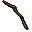
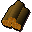
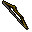

Oak longbow

| Config name | unstrung_oak_longbow |
| Item id | 56 |
| Value | 80 gp |
| Weight | 47oz |
| Members | Yes |
| Tradeable | Yes |
| Stackable | No |
| Category | unstrung_bow |
| Defined in | scripts/skill_fletching/configs/stringing/bows.obj |
Oak longbow
An unstrung oak longbow, I need a bowstring for this.
How to make
| Skill | Level | XP | Ingredients | Tool | How | Where | Makes |
|---|---|---|---|---|---|---|---|
| Fletching | 25 | 25.0 |  Oak logs | chat menu Oak Short Bow. / Oak Long Bow. | 1 |
Used to make
| Skill | Level | XP | Ingredients | Tool | How | Where | Makes |
|---|---|---|---|---|---|---|---|
| Fletching | 25 | 25.0 | Oak longbow, | use on item |  Oak longbow |
Referenced in scripts
scripts/_test/scripts/cheats/cheat_bank.rs2